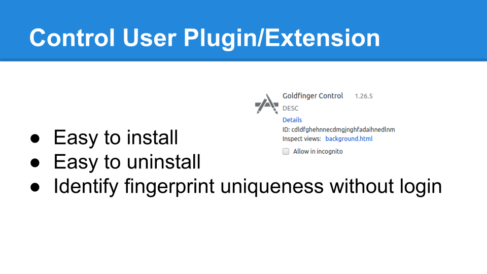

Control Plugin
The control plugin provides researchers with the ability to
run an experiment and determine fingerprint uniqueness without
the requirement that users are actually logging in to a web page.
Install the plugin on any browser in any OS:
Here:
Plugin Download.
The file will be downloaded and placed in your default downloads folder. Navigate to the extensions page
(list of your installed extensions) in your browser. Drag the file into the browser. Your browser may
ask you for permission to install or restart the browser.
Make sure the Goldfinger extension is listed in your extensions page, and press enable/install if necessary. You are now a control user.
Note that this plugin simply lets us know that you are part of the control group.
Periodically over the next seven days, open up the browser, and navigate to web page again.
Web pages to navigate to:
viable.cs.umd.edu/fingerprint_test.html
volition.cs.umd.edu/fingerprint_test.html
UNINSTALLATION:
Navigate to your browser's extensions page, and click either the "x", trash can, uninstall, or disable button next to this extension (this is specific to your browser).

Resources
IEEE Spectrum
Online advertisers collaborate with websites to gather your browsing data, eventually building up a detailed profile of your interests and activities. These browsing profiles can be so specific that they allow advertisers to target...
EFF.org
Abstract. We investigate the degree to which modern web browsers are subject to device Fingerprinting via the version and configuration information that they will transmit to websites upon request...